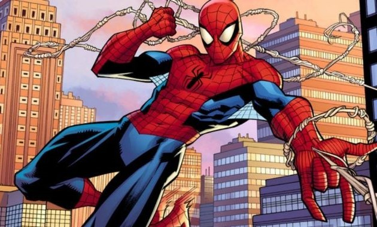
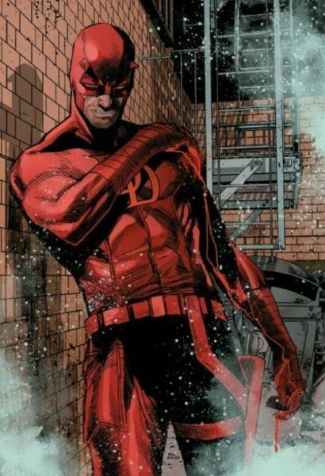

Cuatro Fantásticos
Namor
El conocido grupo conformado por Mr. Fantastico, la Mujer Invisible, la Antorcha Humana y la Mole ha buscado en varias ocasiones la ayuda del despacho para afrontar distintas acusaciones.
Mutante y rey de la Atlantida. Ha buscado los servicios del despacho para afrontar una acusacion de parte del gobierno de Estados Unidos.


Spider-Man
Daredevil
El amigable vecino Spider-Man busco la ayuda del despacho para atender problemas relacionados a su identidad secreta.
El Diablo de Hell's Kitchen, ha colaborado en distintas ocasiones con el despacho, siendo el el primer superheroe llamado a declarar sin necesidad de revelar su identidad secreta.